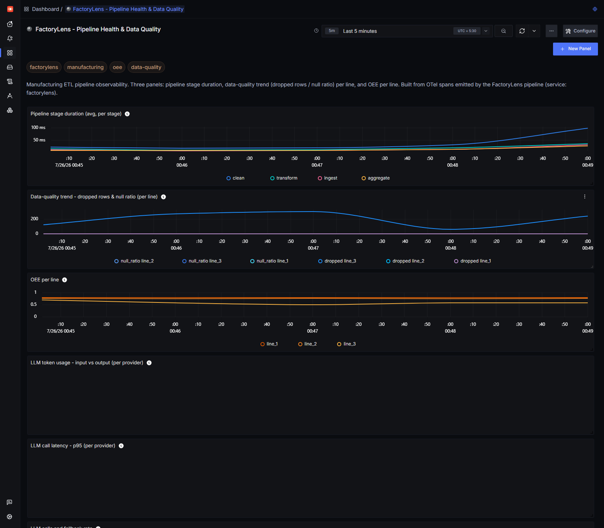
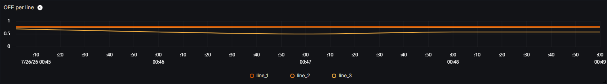
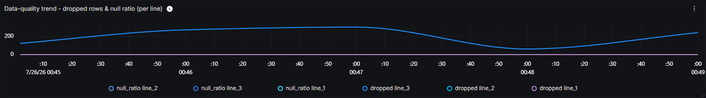
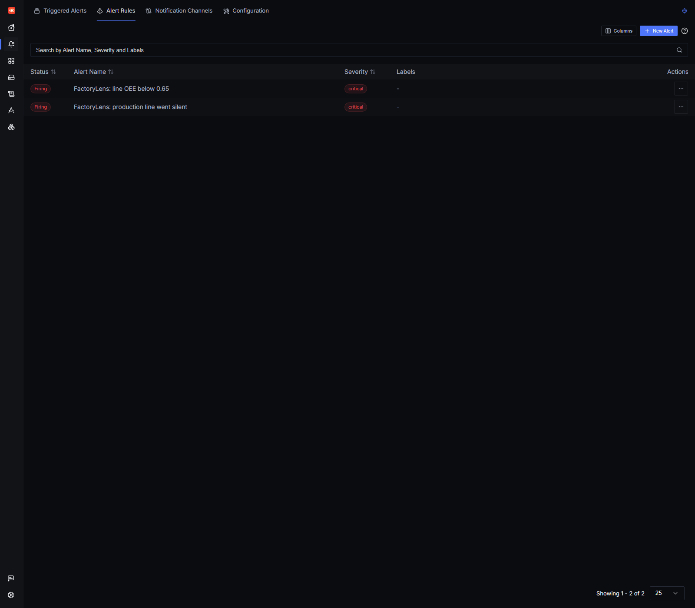

Pipeline duration, data quality, OEE, LLM usage, latency, fallback rate, and streaming alerts.
At a glance
What this project proves
Built for the Agents of SigNoz hackathon, July 20-26, 2026.
Traces, metrics, logs, dashboard JSON, and alert rules all land in the same observability story.
The agent answers from telemetry only and refuses to speculate when the spans do not support a claim.
Telemetry shape
The span tree carries both quality and output
pipeline_run (line_id) |-- ingest rows_in, rows_out, rows_dropped, null_ratio, stale_batch |-- clean malformed rows dropped here, quality measured here |-- transform `-- aggregate availability, performance, quality, oee
The key design choice is simple: do not separate "pipeline health" from "factory performance." The facts that make OEE trustworthy or suspicious travel on the same trace as the OEE number itself.
That makes the dashboard correlation obvious and gives the agent a clean, bounded evidence set to explain line-to-line differences.
Agent answer
"Line_3's OEE is lower primarily due to data quality issues: it dropped 240 rows out of 2000, has a stale batch flag, and correlates with lower availability, performance, quality, and overall OEE than the other lines."
Evidence boundary
What is proven vs. what is intentionally not claimed
Verified in code and tests
- Live OPC UA server drives
OpcUaSourcethrough the unchanged pipeline. - MQTT and streaming paths emit the same ingest, clean, transform, and aggregate spans.
- Dashboards and alert rules were captured from a real self-hosted SigNoz instance.
Not claimed
- No physical PLC hardware was used in this repo.
- Sparkplug B protobuf decoding is not wired yet; the MQTT path currently decodes JSON.
- Real plant commissioning would still need the plant tag map, certificates, and OT/IT networking.
Screenshots
What the observability surface looks like

FactoryLens dashboard
A full SigNoz dashboard view showing pipeline duration, data quality, OEE, LLM cost, latency, and streaming alert panels together.

OEE per line
Line_3 stays visibly below line_1 and line_2.

Data-quality trend
Dropped rows and null ratio climb where the OEE trouble starts.

Alert rules
The OEE-below-floor rule fires live instead of remaining a static JSON file.
Quick path
Four commands to see the whole story
Batch, stream, and ask
uv run factorylens check uv run factorylens run uv run factorylens stream --duration 30 uv run factorylens ask "why is line_3's OEE low?"
What happens next
Import the dashboard JSON, watch alerts fire in SigNoz, and compare the agent answer with the same spans the charts are already showing.
Setup details, environment variables, and troubleshooting are in docs/getting-started.md.